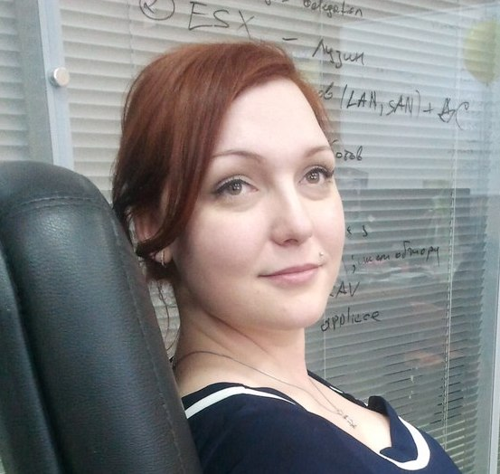

Знакомство с факультетом программирования

Алена Батицкая Нетология
Алена Батицкая
старший аспирант, методист на факультете программирования в Нетологии
- Основана в 2009 году (бренд «Нетология»)
- В 2014 году слияние с Фоксфорд и возникновение Нетология-групп
- Резидент Сколково
- Государственная лицензия на ведение образовательной деятельности
- 134 076 студентов
- Стратегия 2020
Руководство
Генеральный директор

Руководство
Генеральный директор

Максим Спиридонов
Программирование (13 программ)
Дизайн (15 программ)
Управление проектами (15 программ)
Маркетинг (20 программ)
Экспресс-опрос
- Когда была организована Нетология? 2009
- Когда появилась Нетология-групп? 2014
- Что нарисовано на логотипе Фоксфорда? Лиса в монокле и конфедератке
- Сколько программ на факультет маркетинга? 20
Факультет программирования
Цифры
- 9 онлайн программ
- 1 оффлайн программа
- 3 профессии
- 5 координаторов + 1 модератор
- > 100 экспертов
- 17 аспирантов
Дмитрий Фитискин

Руководитель направления «Программирование»
Анастасия Зеленская

Team-lead координаторов
Алена Батицкая
Старший аспирант, методист
В начале было...
Каждый аспирант начинает с ведения групп в Фейсбуке.
Зачем?
- Развивает эмпатию;
- Изучаем курс;
- Изучаем аудиторию;
- Знакомимся с экспертами;
- Плавно вливаемся в работу.
Возможности
Методист
Участвует в разработке и актуализации курсов, готовит дополнительные материалы для студентов и преподавателей.
Тренер
Проверяет домашние работы студентов, проводит консультации.
Наставник
Ведет группы в Фейсбуке, помогает и поддерживает студентов, мотивирует их.
Перспективы
Кем может стать аспирант в конечном итоге?
Старший аспирант
Руководит всей командой аспирантов факультета, распределяет задачи, имеет весомый голос в команде.
Преподаватель курса
Ведет вебинары и открытые лекции, проверяет домашние работы.
Штатный или проектный сотрудник
Работает в крупной известной компании.
Главный секрет успеха и развития?
Активность
Slack

Основной рабочий инструмент, среда общения всех со всеми на факультете.
- Проверяем хотя бы раз в день.
- Не игнорируем.
- Активно участвуем в обсуждениях.
Bitbucket

Храним все материалы для всех курсов: домашние работы, слайды, конспекты, тесты.
- Запрос доступа у меня только при необходимости.
- Каждая задача в отдельной ветке.
- Пулл-запрос в
master в конце.
- Надо уметь GIT.
Trello

Дашборд со всеми задачками, которые требуют выполнения. Хочешь быть методистом? Загляни в трелло и сделай задачку.
- Назначаем себя исполнителем.
- Проставляем срок выполнения.
- Передвигаем в нужный список.
- Задаем вопросы, если не понятно, что делать.
Facebook

Коммуникация со студентами, публикация анонсов и полезных материалов.
- Поставь приложение на телефон.
- Будь администратором!
- Не игнорируй студентов.
Задавайте вопросы и напишите отзыв о лекции!
Алена Батицкая